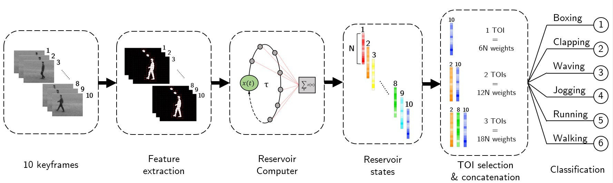

Research
My interdisciplinary research field – at the intersection of machine learning, electronics and signal processing – offers a vast choice of interesting research directions. Here are some of the most exciting projects I have worked on.
Computer vision
High-speed human action recognition in video
The first implementation of video action classification on a physical reservoir computer. This project was particularly exciting because I was in charge of the full pipeline: human detection, pose estimation, feature extraction and classification, neural network training, development of new post-processing strategies, benchmarking with other state-of-the-art systems, hardware design for high speed processing.

Picco, E., Antonik, P. & Massar, S. "High speed human action recognition using a photonic reservoir computer." Neural Networks 165 (2023): 662–675. [DOI] [arXiv]
Audio
Real-time speech recognition on a physical neural network
Spoken-digit classification running on an optoelectronic system in real time, with a deep architecture whose layers were connected analogically rather than digitally — a first for this class of hardware. I designed the models, built the processing chain, and benchmarked accuracy against the digital equivalent.
This is the thread that connects most directly to bioacoustics: variable-length audio, noisy channels, classification under tight latency budgets.
Method
Optimising physical neural networks with a delayed input
Physical learning systems are awkward to tune because their internal parameters are not freely accessible. We showed that manipulating the input signal in time alone is enough to optimise performance, which removes most of the need for hardware redesign. Published in Nature Communications Engineering.
Hardware
Data acquisition and control systems
All of the above needed an acquisition layer that did not exist: FPGA designs interfacing analog optical signals with digital processing, plus the instrumentation and control systems around them. I extended the same work as a visiting researcher at IBM Research Zurich, driving a photonic neuromorphic accelerator, and at imec Ghent, applying neural models to non-linear channel equalisation in optical telecoms.
Practically: I am comfortable with sensors, embedded systems and messy real-world signal acquisition, not only with clean datasets.
Context
POST-DIGITAL
My PhD was part of POST-DIGITAL, a European doctoral network on next-generation computing linking academic and industrial partners across several countries. It is where I learned to work as the technical translator between people who do not share a vocabulary — and where I found I like that role.